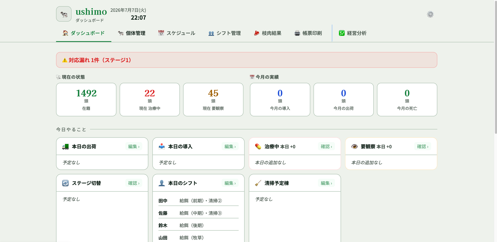
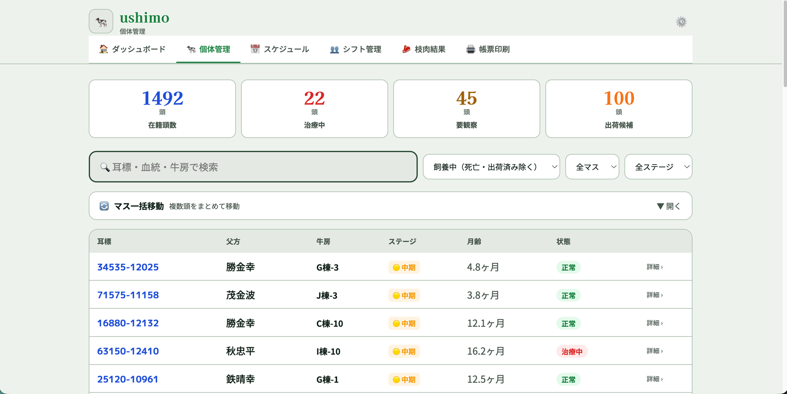
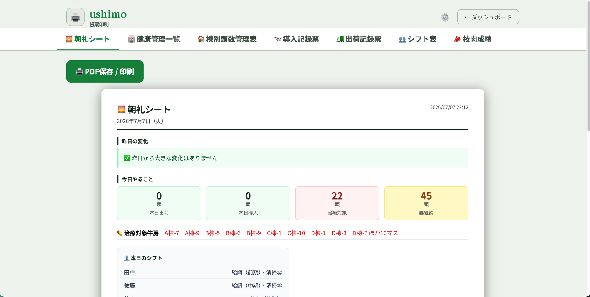
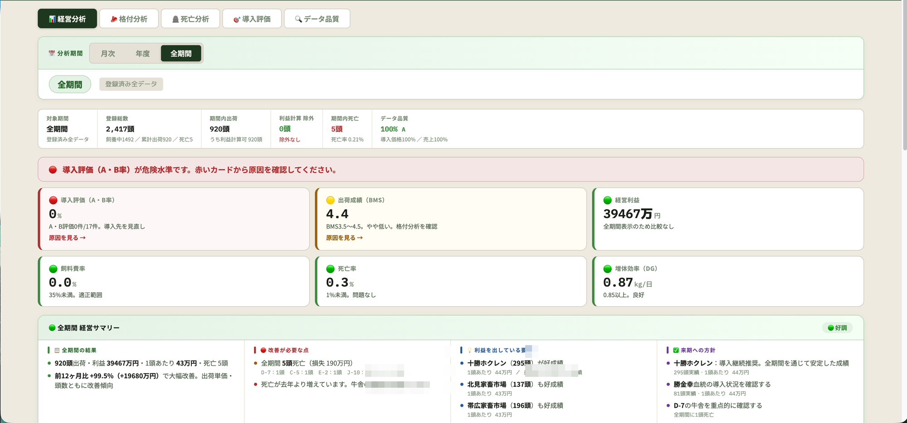

<meta charset="UTF-8">
<meta name="viewport" content="width=device-width, initial-scale=1.0">
<title>業務Webアプリ制作 | Excel・手書き作業をスマホで完結する仕組みに</title>
<meta name="description" content="個人事業者・小規模チーム向けの業務Webアプリ制作。Excel作業・手書きの管理業務を、スマホで完結する仕組みに変えます。">
<style>
  :root {
    --bg: #ffffff;
    --bg-alt: #f5f7f8;
    --text: #1a2b32;
    --text-sub: #4a5c63;
    --accent: #1f7a5c;
    --accent-dark: #165c44;
    --border: #dce4e6;
    --radius: 12px;
    --maxw: 720px;
  }

  * { box-sizing: border-box; margin: 0; padding: 0; }

  html { -webkit-text-size-adjust: 100%; }

  body {
    font-family: -apple-system, BlinkMacSystemFont, "Hiragino Sans", "Hiragino Kaku Gothic ProN", "Noto Sans JP", "Yu Gothic", Meiryo, sans-serif;
    font-size: 16px;
    line-height: 1.75;
    color: var(--text);
    background: var(--bg);
    -webkit-font-smoothing: antialiased;
  }

  .wrap {
    width: 100%;
    max-width: var(--maxw);
    margin: 0 auto;
    padding: 0 20px;
  }

  section { padding: 48px 0; }

  h2 {
    font-size: 1.4rem;
    line-height: 1.5;
    margin-bottom: 8px;
    color: var(--text);
  }

  .section-lead {
    color: var(--text-sub);
    margin-bottom: 28px;
    font-size: 0.95rem;
  }

  /* ヒーロー */
  .hero {
    background: linear-gradient(160deg, #eef5f2 0%, #f5f7f8 100%);
    padding: 64px 0 56px;
    border-bottom: 1px solid var(--border);
  }
  .hero h1 {
    font-size: 1.75rem;
    line-height: 1.5;
    letter-spacing: 0.01em;
    color: var(--text);
    margin-bottom: 16px;
  }
  .hero h1 .em { color: var(--accent-dark); }
  .hero p {
    font-size: 1.05rem;
    color: var(--text-sub);
    margin-bottom: 28px;
  }

  .btn {
    display: inline-flex;
    align-items: center;
    justify-content: center;
    min-height: 52px;
    padding: 14px 28px;
    font-size: 1rem;
    font-weight: 700;
    color: #fff;
    background: var(--accent);
    border: none;
    border-radius: var(--radius);
    text-decoration: none;
    transition: background 0.2s;
  }
  .btn:active { background: var(--accent-dark); }

  /* 実績 */
  .work { background: var(--bg); }
  .work .tag {
    display: inline-block;
    font-size: 0.8rem;
    font-weight: 700;
    color: var(--accent-dark);
    background: #e2f0ea;
    padding: 4px 12px;
    border-radius: 999px;
    margin-bottom: 12px;
  }
  .work ul { list-style: none; margin: 20px 0 8px; }
  .work li {
    position: relative;
    padding: 8px 0 8px 28px;
    border-bottom: 1px solid var(--border);
  }
  .work li:last-child { border-bottom: none; }
  .work li::before {
    content: "";
    position: absolute;
    left: 4px;
    top: 18px;
    width: 8px;
    height: 8px;
    border-radius: 50%;
    background: var(--accent);
  }

  .shots {
    display: grid;
    grid-template-columns: 1fr;
    gap: 20px;
    margin-top: 24px;
  }
  .shot {
    border: 1px solid var(--border);
    border-radius: var(--radius);
    overflow: hidden;
    background: #fff;
  }
  .shot img {
    width: 100%;
    height: auto;
    display: block;
    border-bottom: 1px solid var(--border);
  }
  .shot figcaption {
    padding: 12px 16px;
    font-size: 0.9rem;
    line-height: 1.6;
    color: var(--text-sub);
  }
  .note {
    margin-top: 16px;
    font-size: 0.82rem;
    color: var(--text-sub);
  }

  /* できること */
  .can { background: var(--bg-alt); }
  .can .cards {
    display: grid;
    gap: 12px;
    margin-top: 8px;
  }
  .card {
    background: #fff;
    border: 1px solid var(--border);
    border-radius: var(--radius);
    padding: 18px 20px;
  }
  .card h3 {
    font-size: 1rem;
    margin-bottom: 4px;
    color: var(--text);
  }
  .card p {
    font-size: 0.9rem;
    color: var(--text-sub);
    line-height: 1.7;
  }

  /* 進め方 */
  .flow { background: var(--bg); }
  .steps { counter-reset: step; margin-top: 8px; }
  .step {
    position: relative;
    padding: 20px 20px 20px 64px;
    border: 1px solid var(--border);
    border-radius: var(--radius);
    margin-bottom: 12px;
  }
  .step::before {
    counter-increment: step;
    content: counter(step);
    position: absolute;
    left: 18px;
    top: 20px;
    width: 32px;
    height: 32px;
    border-radius: 50%;
    background: var(--accent);
    color: #fff;
    font-weight: 700;
    display: flex;
    align-items: center;
    justify-content: center;
  }
  .step h3 { font-size: 1rem; margin-bottom: 2px; }
  .step p { font-size: 0.9rem; color: var(--text-sub); }
  .free-note {
    margin-top: 16px;
    padding: 16px 18px;
    background: #e2f0ea;
    border-radius: var(--radius);
    font-size: 0.92rem;
    color: var(--accent-dark);
    font-weight: 600;
  }

  /* 連絡 */
  .contact {
    background: var(--accent-dark);
    color: #fff;
    text-align: center;
  }
  .contact h2 { color: #fff; }
  .contact p { color: #d5e6df; margin-bottom: 24px; }
  .contact .btn {
    background: #fff;
    color: var(--accent-dark);
  }
  .contact .btn:active { background: #e2f0ea; }

  footer {
    background: var(--accent-dark);
    color: #9fc4b6;
    text-align: center;
    font-size: 0.8rem;
    padding: 24px 0 32px;
  }

  /* タブレット以上 */
  @media (min-width: 600px) {
    .hero h1 { font-size: 2.1rem; }
    h2 { font-size: 1.6rem; }
    .can .cards { grid-template-columns: repeat(2, 1fr); }
  }
</style>

<!-- ヒーロー -->
<header class="hero">
  <div class="wrap">
    <h1><span class="em">Excel作業・手書きの管理業務</span>を、<br>スマホで完結する仕組みに変えます</h1>
    <p>個人事業者・小規模チーム向けの業務Webアプリ制作</p>
    <a href="#contact" class="btn">まずは相談する（試作まで無料）</a>
  </div>
</header>

<!-- 実績 -->
<section class="work">
  <div class="wrap">
    <span class="tag">制作実績</span>
    <h2>牧場管理システム</h2>
    <p class="section-lead">北海道・肥育牧場　約1,500頭規模</p>
    <ul>
      <li>紙とExcelで行っていた朝礼資料の作成を自動化</li>
      <li>治療記録・出荷管理・シフト表をスマホ入力に一本化</li>
      <li>屋外・手袋着用でも使える画面設計</li>
    </ul>

    <div class="shots">
      <figure class="shot">
        
        <figcaption>毎朝の状況をひと目で把握するダッシュボード</figcaption>
      </figure>
      <figure class="shot">
        
        <figcaption>頭数・治療状況をスマホで一覧管理</figcaption>
      </figure>
      <figure class="shot">
        
        <figcaption>朝礼シート:昨日の変化・今日やること・シフトを1枚に自動集約</figcaption>
      </figure>
      <figure class="shot">
        
        <figcaption>経営分析:利益率や出荷成績を自動集計</figcaption>
      </figure>
    </div>
    <p class="note">※ 掲載画面はダミーデータによるものです。牧場名・個人名・実データは一切含みません。</p>
  </div>
</section>

<!-- できること -->
<section class="can">
  <div class="wrap">
    <h2>できること</h2>
    <p class="section-lead">「今の業務を、そのままスマホで」を軸にした制作をしています。</p>
    <div class="cards">
      <div class="card">
        <h3>Excel管理表のWebアプリ化</h3>
        <p>普段使っている管理表を、スマホから入力・閲覧できる形に。</p>
      </div>
      <div class="card">
        <h3>CSVデータの取り込み・集計の自動化</h3>
        <p>手作業の転記や集計をなくし、データをそのまま活用。</p>
      </div>
      <div class="card">
        <h3>印刷用帳票の自動生成</h3>
        <p>日報・チェックリストなど、必要な帳票をワンタップで出力。</p>
      </div>
      <div class="card">
        <h3>「今のやり方に寄せる」設計</h3>
        <p>既存業務を無理に変えず、現場に馴染む形で仕組み化。</p>
      </div>
    </div>
  </div>
</section>

<!-- 進め方 -->
<section class="flow">
  <div class="wrap">
    <h2>進め方</h2>
    <p class="section-lead">いきなり本製作には入りません。試作を見て判断できます。</p>
    <div class="steps">
      <div class="step">
        <h3>ヒアリング</h3>
        <p>今の業務・お困りごとをお聞きします。</p>
      </div>
      <div class="step">
        <h3>試作を見て判断</h3>
        <p>実際に触れる試作をお見せします。ここで進めるか判断できます。</p>
      </div>
      <div class="step">
        <h3>本製作</h3>
        <p>ご納得いただいてから、本番の仕組みを作り込みます。</p>
      </div>
    </div>
    <p class="free-note">試作を見ていただく段階までは無料です。まずはお気軽にご相談ください。</p>
  </div>
</section>

<!-- 連絡 -->
<section class="contact" id="contact">
  <div class="wrap">
    <h2>ご相談・お問い合わせ</h2>
    <p>クラウドワークスのプロフィールよりご連絡ください。</p>
    <!-- TODO: クラウドワークスのプロフィールURLを後日ここに挿入 -->
    <a href="#" class="btn">クラウドワークスのプロフィールへ</a>
  </div>
</section>

<footer>
  <div class="wrap">
    <p>&copy; 2026 業務Webアプリ制作</p>
  </div>
</footer>
